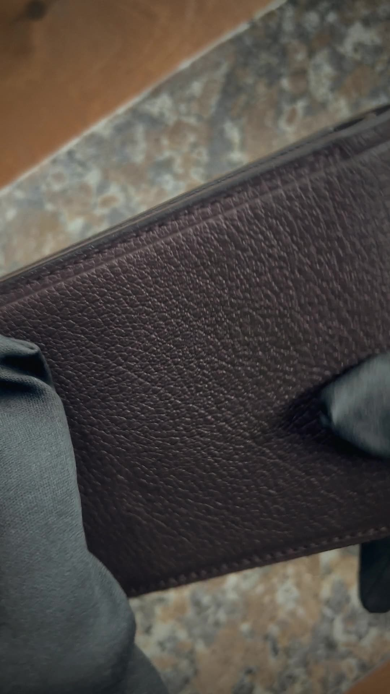
6 часов работыКошелёк бифолд
Тёмно-коричневая зернистая кожа, отделения для карт и купюр, края обработаны вручную.
Цена по запросуЗаказать
Кошельки, картхолдеры и обложки ручной работы. Обрабатываем края и прошиваем каждое изделие сами. Натуральная кожа со временем темнеет, покрывается патиной и запоминает, как вы её носите.
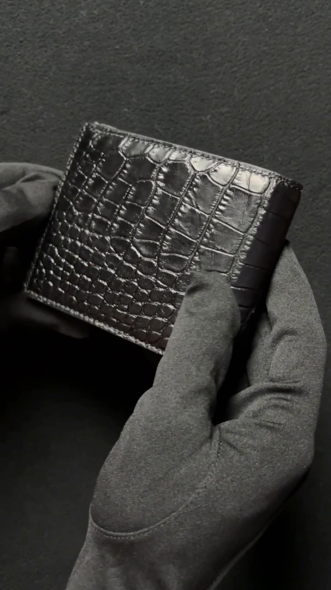
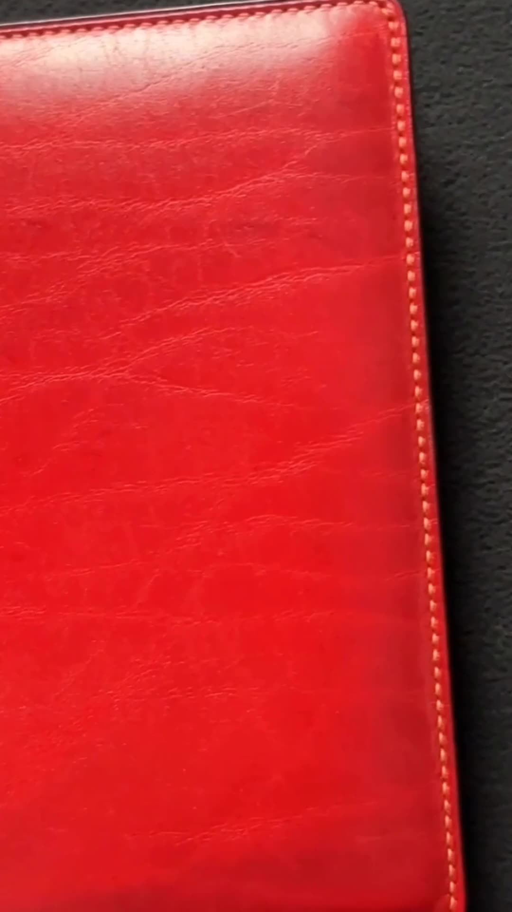
Цвет, кожу и детали обсуждаем перед работой. Напишите, какое изделие нравится, и мы расскажем о наличии и сроках.

6 часов работыТёмно-коричневая зернистая кожа, отделения для карт и купюр, края обработаны вручную.
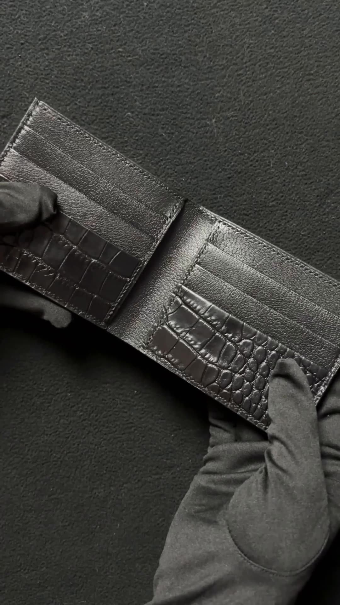
Чёрная кожа с тиснением под крокодила. Внутри карманы для карт и отделение для купюр.
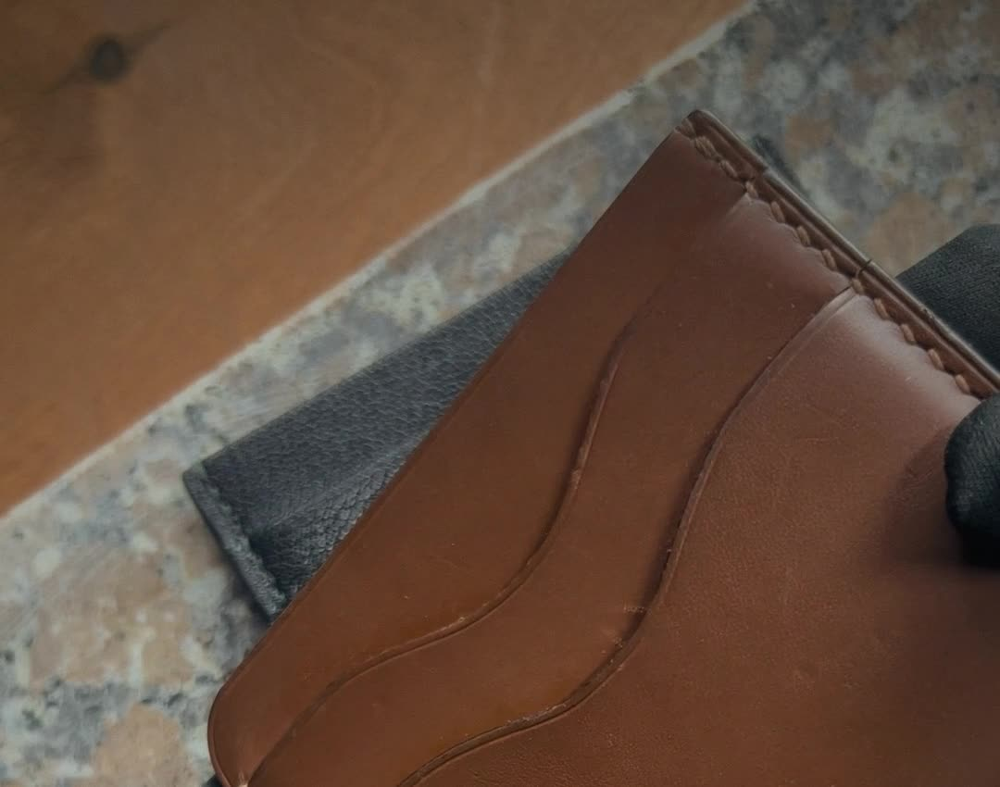
С патинойФигурные карманы и ручная прошивка. С каждым месяцем цвет становится глубже.
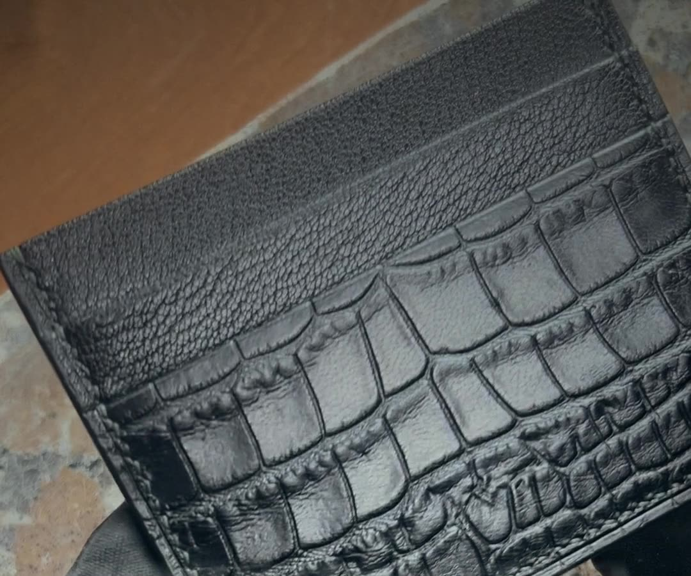
Чёрный, с тиснением под крокодила. Тонкий, помещается в карман рубашки.
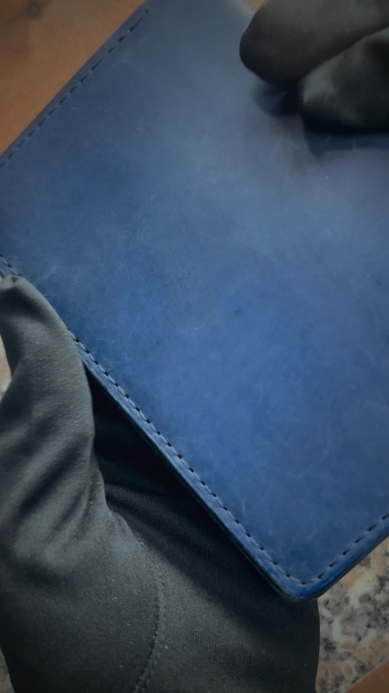
Синяя кожа. Следы использования убираются небольшим уходом, как в нашем ролике.
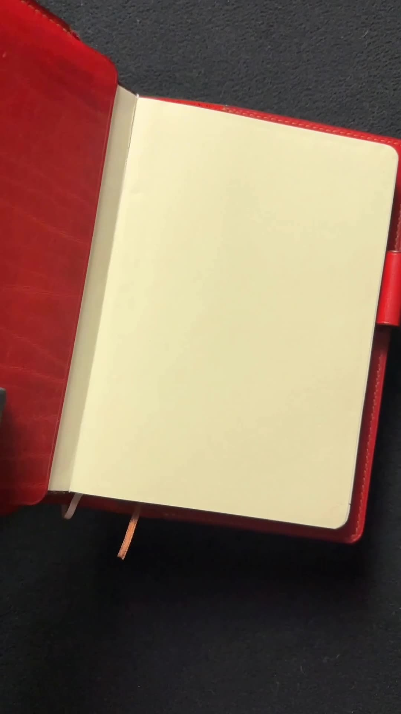
Красная кожа с яркой фактурой, петля для ручки, сменный блок.
Этот картхолдер мы носим каждый день больше года. Вот что происходит с натуральной кожей.
Не обещаем на словах. Царапаем, мочим, сгибаем и снимаем, что получилось.
Ударили по обоим образцам. Кожа конкурента деформировалась, на ней осталась вмятина.
Капнули воду на кожу и подождали. Через час от капли не осталось следа.
Хорошая кожа помнит, как её носят. Складки делают вещь вашей.
После небольшого ухода мелкие следы на обложке стали гораздо менее заметными.
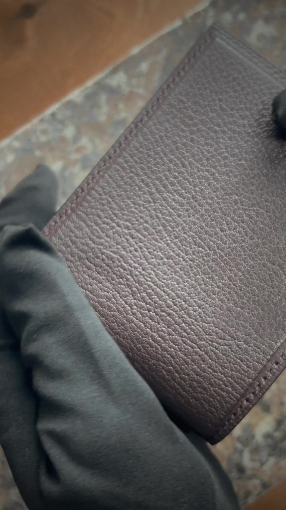
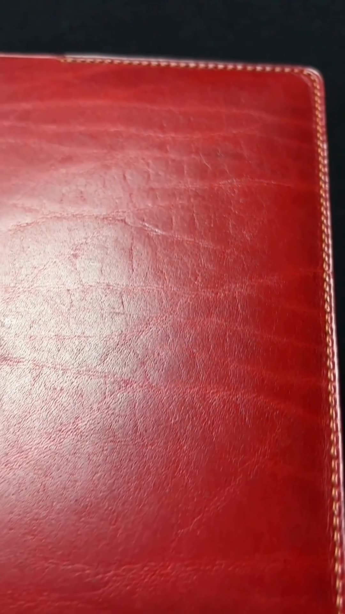
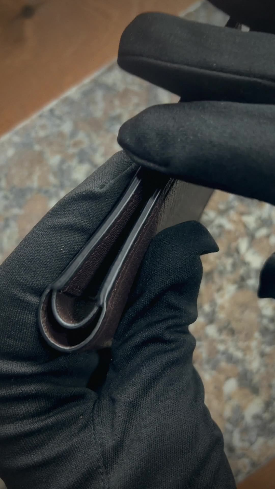
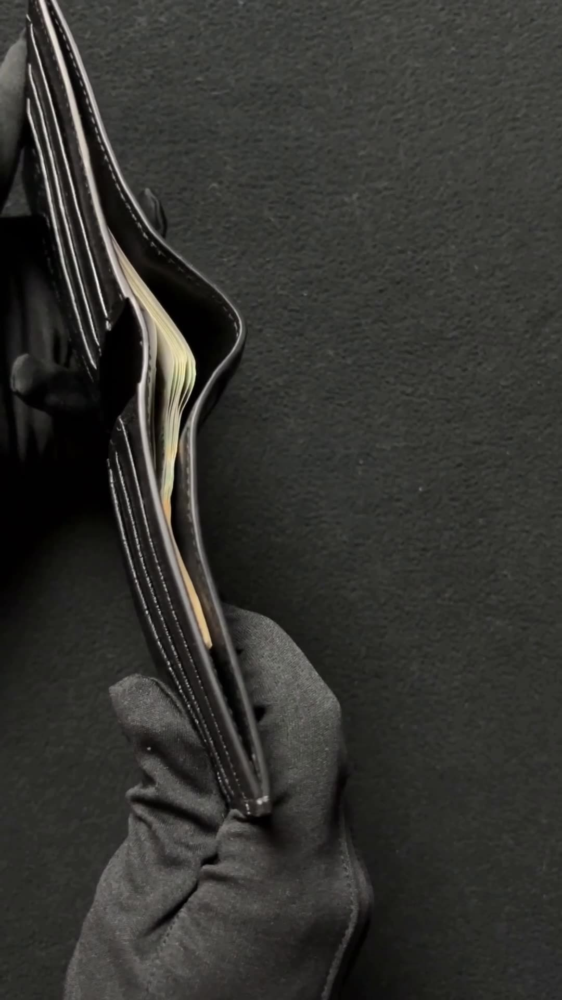